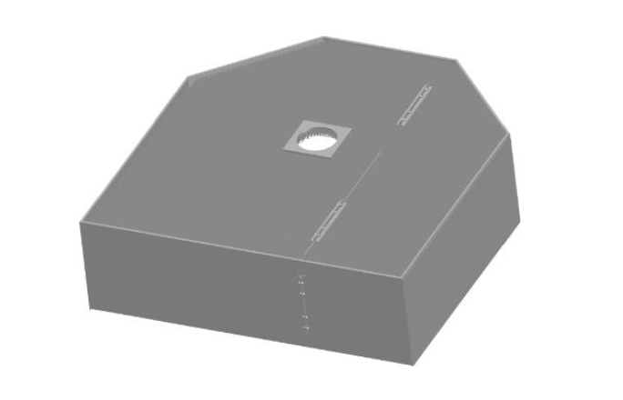
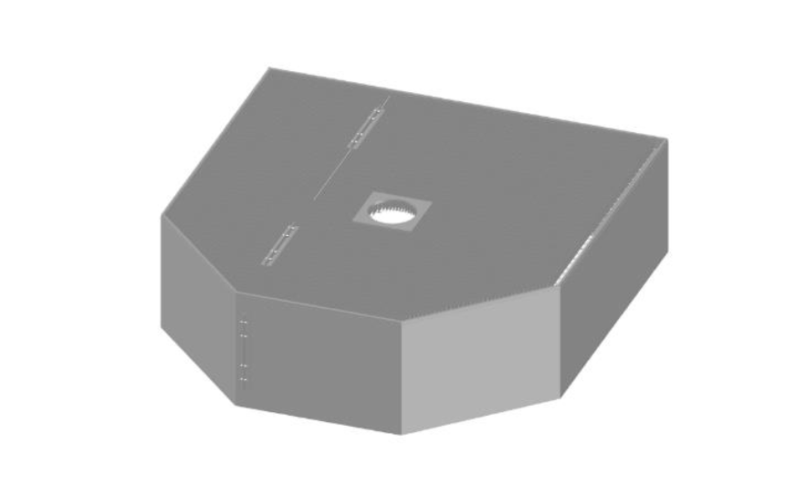
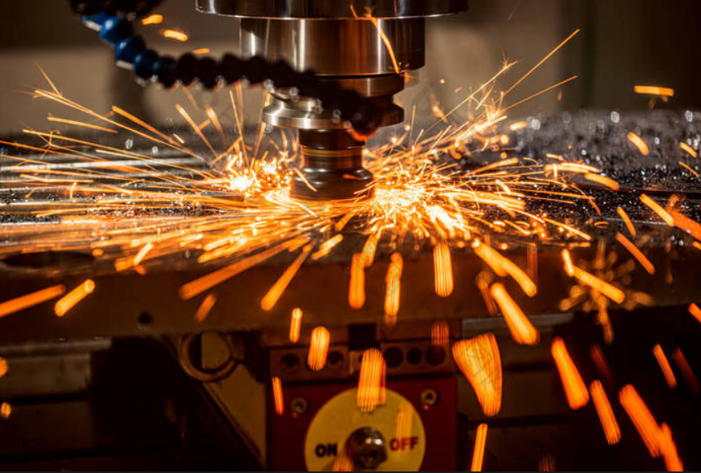

Thermal Performance
Our ceramic fiber solutions are designed to support dependable thermal control and efficient refractory performance in industrial use.
Contact Us Today
(440) 386-4580
U.S. Refractory Products provides ceramic fiber application solutions designed to support dependable thermal performance, cost efficiency, and reliable service in demanding industrial environments.

Our ceramic fiber application products are developed to help customers improve efficiency, reduce heat-related loss, and support dependable long-term refractory performance.
We focus on practical solutions that work well in real industrial conditions and provide strong long-term value.

Our ceramic fiber applications are intended to support thermal efficiency, dependable material performance, and application-focused value across a range of operating environments.
These products help customers improve consistency while supporting cost-conscious decisions and reliable performance.
Our ceramic fiber solutions are designed to support dependable thermal control and efficient refractory performance in industrial use.
These products are intended to help customers manage operating cost while maintaining strong performance and practical durability.
We work with customers to help identify the ceramic fiber solution that best fits their operating conditions and production needs.
Our ceramic fiber products are designed for customers who need dependable performance, practical thermal solutions, and strong long-term value in industrial settings.
By combining product knowledge with responsive support, U.S. Refractory Products helps customers choose ceramic fiber solutions that fit real operating conditions.

Contact our team to learn more about our ceramic fiber solutions and discuss which product may best support your application.